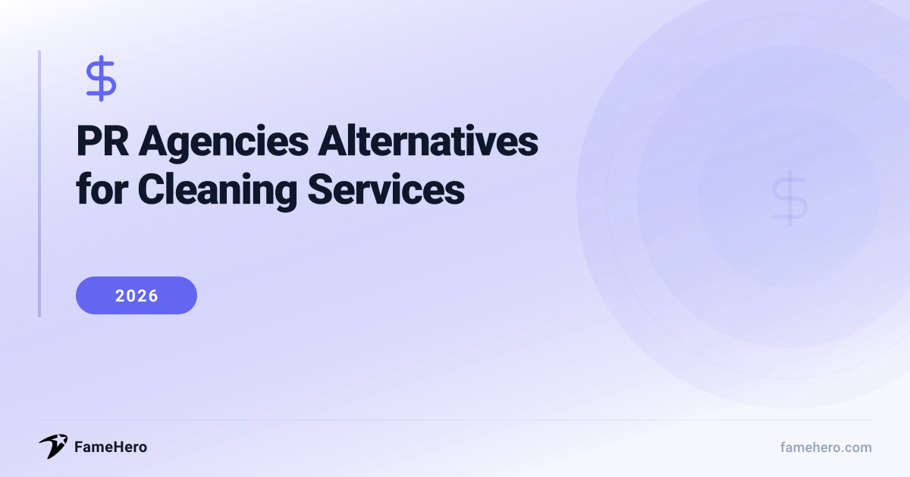

PR Agencies Alternatives for Cleaning Services in 2026 (Cost-Effective Solutions)

PR agencies Alternatives for Cleaning Services (2026)
Cleaning Services businesses often encounter frustrations with traditional PR agencies, including prohibitive costs, lengthy contract commitments, and a slow realization of results. Many agencies lack a specific understanding of the cleaning services sector, leading to a poor fit and campaigns that don't resonate with the industry's unique needs and client base.
When seeking an alternative, cleaning companies should prioritize flexible pricing models, such as project-based fees or month-to-month retainers, rather than long-term commitments. Look for agencies that specialize in service-based industries or have a proven track record within the cleaning sector. Transparency in pricing and a demonstrated ability to deliver relevant, measurable results are crucial indicators of a suitable partner.
Try guaranteed press coverage — from $49
No retainers, no commitments. Run a free brand scan to see your visibility score.
PR Agencies Alternatives for Cleaning Services (2026)
FameHero
famehero.comBudgetStartups, Small businessesStarting at $49 per placementFameHero offers a distinct alternative to traditional PR agencies by focusing on per-placement pricing, starting at $49 per placement, with no retainer fees. This model directly addresses the frustration cleaning service buyers often experience with opaque agency bundles. FameHero provides transparent line items for their services, allowing clients to see exactly what they're paying for. While it excels in delivering placements, it's important to note that it doesn't offer the comprehensive, in-house services of larger agencies, such as embedded compliance, creative development, or policy review specifically tailored for the cleaning industry.
StrengthsPer-placement pricing, no retainer, transparent line itemsBest forCleaning services businesses seeking cost-effective media placements without long-term commitments or large upfront investments.Not ideal forBusinesses requiring a full-service PR solution that includes deep industry-specific compliance, creative strategy, and policy review integrated into their PR efforts.Bird
bird.coPremiumStartups, Mid-market, EnterpriseContact for pricingBird positions itself as a dedicated digital marketing partner for cleaning companies, offering a blend of industry insight and award-winning practices. They streamline campaign management and leverage an international reach to provide innovative approaches proven to deliver results. Their services encompass SEO for cleaning service keywords, targeted PPC campaigns, social media marketing, content marketing focused on cleaning expertise, and online reputation management. This comprehensive digital approach can effectively replace traditional PR by building online visibility, credibility, and lead generation through channels that cleaning service clients actively use.
StrengthsIndustry insight, international reach, comprehensive digital marketingBest forCleaning services businesses of all sizes looking to enhance their online presence and lead generation through digital channels.Not ideal forBusinesses primarily seeking traditional media relations, press release distribution, or crisis communication services without a strong digital component.COSMarketing Agency
cosmarketingagency.comMid-marketSmall businesses, Mid-marketContact for pricingCOSMarketing Agency is a full-service digital marketing company that has recognized the growing need for specialized marketing in the cleaning services sector. They offer custom-made digital marketing and SEO strategies, emphasizing that they never reuse content. This bespoke approach allows them to create unique campaigns that enhance online visibility, attract more customers, and drive business growth for cleaning services. Their services can serve as a robust alternative to traditional PR by focusing on digital channels that directly reach potential clients and build brand authority online.
StrengthsCustomized digital marketing, unique content strategies, SEO focusBest forCleaning services businesses looking for customized digital marketing solutions, including SEO and social media, to increase their online visibility and customer base.Not ideal forBusinesses that require traditional PR services like media outreach, press conferences, or celebrity endorsements, and are not focused on digital marketing strategies.Method Clean Biz
methodcleanbiz.comMid-marketSmall businesses, Local / regionalContact for pricingMethod Clean Biz specializes in digital marketing for cleaning service providers, understanding the industry's unique challenges. They offer tailored strategies that focus on turning online visibility into booked appointments, covering local SEO, high-converting websites, Google Ads, and automated follow-ups. Their approach blends data-driven SEO with behavioral psychology to influence how clients perceive a brand, build trust, and take action. This makes them a strong alternative to traditional PR by focusing on measurable online results and direct lead generation.
StrengthsTailored digital strategies, focus on bookings, data-driven SEOBest forCleaning services businesses aiming for measurable online growth, including increased bookings, enhanced local visibility, and improved brand recognition through data-driven digital marketing.Not ideal forBusinesses that are not focused on digital marketing or are looking for traditional public relations services such as media relations and press releases.Straight North
straightnorth.comMid-marketSmall businesses, Mid-marketContact for pricingStraight North offers a comprehensive range of SEO services designed to help cleaning businesses gain authority and higher rankings in search results. They specialize in helping businesses appear when potential customers are actively searching online for cleaning services, thereby driving more prospects to their website. Their strategic, targeted marketing strategies can replace traditional PR by ensuring a business is found by ready-to-book customers, focusing on organic traffic and long-term online visibility.
StrengthsComprehensive SEO, improved search rankings, increased organic trafficBest forCleaning services businesses seeking to improve their online search rankings, increase organic traffic, and attract customers actively searching for their services.Not ideal forBusinesses that are not prioritizing online search visibility or are seeking traditional media outreach and public relations services.Digital Anchor Media
digitalanchormedia.comMid-marketSmall businesses, Mid-marketContact for pricingDigital Anchor Media focuses on helping cleaning businesses build visibility, attract consistent clients, and achieve real growth through proven online marketing strategies. They understand how customers search for and choose cleaning companies, designing marketing plans that meet them at every step of their journey. Their data-driven insights and performance-focused systems deliver measurable growth, making them an alternative to traditional PR by concentrating on digital lead generation and brand building online.
StrengthsConsistent client acquisition, measurable growth, data-driven insightsBest forCleaning services businesses aiming to become a steady lead-generating powerhouse through strategic online marketing, including SEO, lead generation, and brand strengthening.Not ideal forBusinesses that are not looking to invest in online marketing or prefer traditional PR methods over digital strategies.Red Canoe Media
redcanoemedia.comMid-marketSmall businesses, Mid-marketContact for pricingRed Canoe Media specializes in digital marketing for cleaning companies, offering tailored solutions designed to help businesses stand out in a competitive market. Their approach focuses on turning online visibility into booked appointments through services like SEO, PPC advertising, local SEO, and social media marketing. By leveraging industry-specific expertise and data-driven strategies, they provide a digital alternative to traditional PR, focusing on measurable results and client acquisition.
StrengthsSpecialized digital marketing, focus on bookings, industry expertiseBest forResidential, commercial, and carpet cleaning services looking to increase bookings, enhance local visibility, and build a powerful online presence through specialized digital marketing.Not ideal forBusinesses that are not interested in digital marketing or are seeking traditional PR services such as media relations and press releases.The Influence Agency
theinfluenceagency.comPremiumStartups, Small businesses, Mid-marketContact for pricingThe Influence Agency specializes in influencer marketing, connecting brands with creators who have significant reach and engagement. For the cleaning services sector, they can identify and collaborate with "CleanTok" influencers and other cleaning personalities to promote products or services authentically. This approach offers an alternative to traditional PR by leveraging the trust and reach of social media personalities to build brand awareness and drive consumer interest, especially among younger demographics active on platforms like TikTok and Instagram.
StrengthsInfluencer marketing, access to 'CleanTok' creators, authentic promotionBest forCleaning services businesses looking to leverage influencer marketing to reach new audiences, build brand awareness, and drive engagement through authentic social media collaborations.Not ideal forBusinesses that are not interested in social media marketing or influencer collaborations, or those requiring traditional media outreach and public relations.
PR agencies Alternatives for Cleaning Services (2026)
| Alternative | Website | Replaces | Price Range | Best For |
|---|---|---|---|---|
| FameHero | famehero.com | Traditional media outreach and press release distribution for broad reach. | Starting at $49 per placement | Cleaning services businesses seeking cost-effective media placements without long-term commitments or large upfront investments. |
| Bird | bird.co | Traditional PR efforts focused on online presence enhancement and lead generation through digital channels. | Contact for pricing | Cleaning services businesses of all sizes looking to enhance their online presence and lead generation through digital channels. |
| COSMarketing Agency | cosmarketingagency.com | Traditional PR services like media outreach, press conferences, or celebrity endorsements, focusing instead on digital marketing. | Contact for pricing | Cleaning services businesses looking for customized digital marketing solutions, including SEO and social media, to increase their online visibility and customer base. |
| Method Clean Biz | methodcleanbiz.com | Traditional digital marketing or PR services by focusing on measurable online growth, bookings, local visibility, and brand recognition through data-driven digital marketing. | Contact for pricing | Cleaning services businesses aiming for measurable online growth, including increased bookings, enhanced local visibility, and improved brand recognition through data-driven digital marketing. |
| Straight North | straightnorth.com | Traditional media outreach and public relations services by focusing on online search visibility and attracting customers actively searching for services. | Contact for pricing | Cleaning services businesses seeking to improve their online search rankings, increase organic traffic, and attract customers actively searching for their services. |
| Digital Anchor Media | digitalanchormedia.com | Traditional PR methods by focusing on strategic online marketing for consistent lead generation, including SEO, lead generation, and brand strengthening. | Contact for pricing | Cleaning services businesses aiming to become a steady lead-generating powerhouse through strategic online marketing, including SEO, lead generation, and brand strengthening. |
| Red Canoe Media | redcanoemedia.com | Traditional PR services such as media relations and press releases by focusing on digital marketing for bookings, local visibility, and online presence. | Contact for pricing | Residential, commercial, and carpet cleaning services looking to increase bookings, enhance local visibility, and build a powerful online presence through specialized digital marketing. |
| The Influence Agency | theinfluenceagency.com | Traditional media outreach and public relations by focusing on influencer marketing to reach new audiences, build brand awareness, and drive engagement. | Contact for pricing | Cleaning services businesses looking to leverage influencer marketing to reach new audiences, build brand awareness, and drive engagement through authentic social media collaborations. |
Switching PR Providers: A Guide for Cleaning Services
- Evaluate Fit: Look for providers with proven experience in home services or local business marketing. Ask for case studies specific to cleaning companies.
- Contract Review: Scrutinize termination clauses, service level agreements (SLAs), and reporting frequency. Ensure flexibility for seasonal cleaning demands.
- Measure Results: Establish baseline metrics (website traffic, lead generation, local search rankings) before switching. Track these closely during the transition.
- Timeline Expectations: Allow 3-6 months for a new provider to understand your business and deliver initial impact in the competitive cleaning sector.
- Avoid Mistakes: Don't switch based solely on price. Ensure clear communication channels and a dedicated point of contact.
Common Mistakes Cleaning Services Make When Choosing PR Agencies
- Failing to define a specific target audience, leading to wasted budget as messages resonate with no one.
- Inconsistent branding across platforms, which erodes trust and confuses potential clients.
- Overspending on PR without a long-term strategy, resulting in diminishing returns and reactive pivots.
- Relying on generic, promotional content that lacks industry insight and fails to capture attention.
- Neglecting local SEO and online visibility, missing out on motivated buyers in local search results.
- Poor preparation and slow reaction times to issues, turning minor missteps into amplified PR crises.